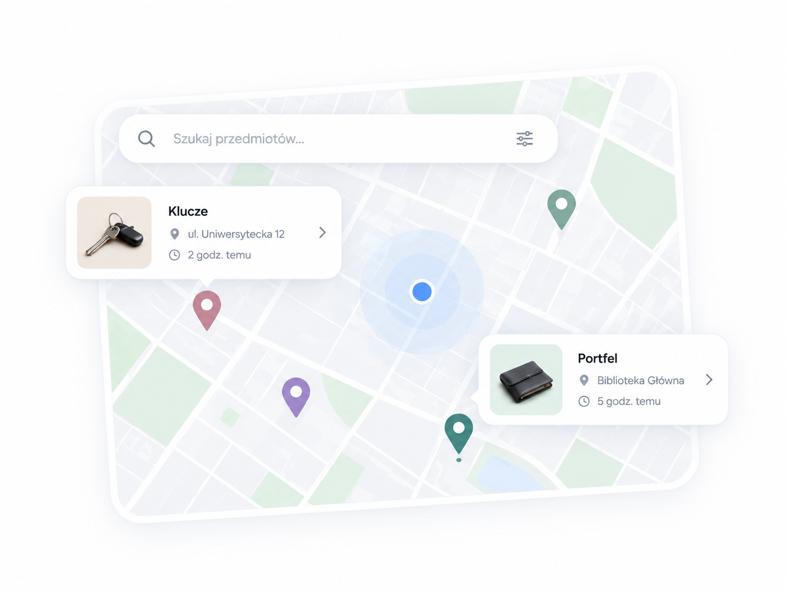
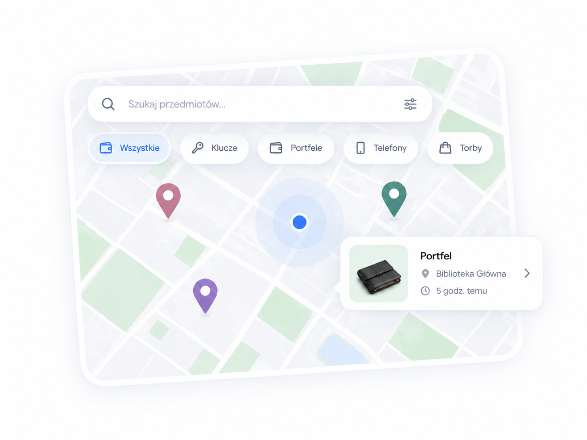
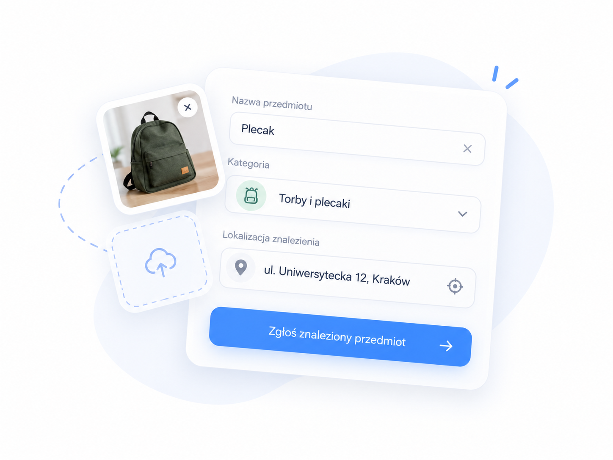

1
Dodaj zgłoszenie
Opisz przedmiot, wybierz kategorię i zaznacz lokalizację.
Zgubiłeś coś? A może coś znalazłeś? Odkrywaj zgłoszenia na mapie i pomóż przedmiotom wrócić do właścicieli.

Opisz przedmiot, wybierz kategorię i zaznacz lokalizację.
Znajduj rzeczy zgubione i znalezione w wybranej okolicy.
Porozmawiajcie przez czat i umówcie bezpieczne przekazanie rzeczy.
Przeszukaj interaktywną mapę i sprawdź, czy ktoś znalazł Twój przedmiot. Wyszukuj po nazwie, kategorii lub lokalizacji.
Szukaj na mapie

Dodaj zgłoszenie z nazwą, opisem, zdjęciem i miejscem znalezienia. To kilka prostych kroków, które mogą pomóc właścicielowi.
Dodaj zgłoszenieWbudowany czat pozwala porozmawiać bezpośrednio z osobą, która znalazła lub zgubiła przedmiot, bez publikowania numeru telefonu.
Przejdź do czatuProste narzędzia, które ułatwiają odnalezienie zguby i kontakt z drugą osobą.
Przeglądaj zgłoszenia w wybranej okolicy i sprawdzaj punkty bezpośrednio na mapie.
Filtruj przedmioty według kategorii, takich jak klucze, dokumenty, elektronika czy torby.
Planowana płatna opcja zwiększająca widoczność wybranego zgłoszenia.
Masz coś do zgłoszenia? Dodaj informację i zaznacz miejsce na mapie.